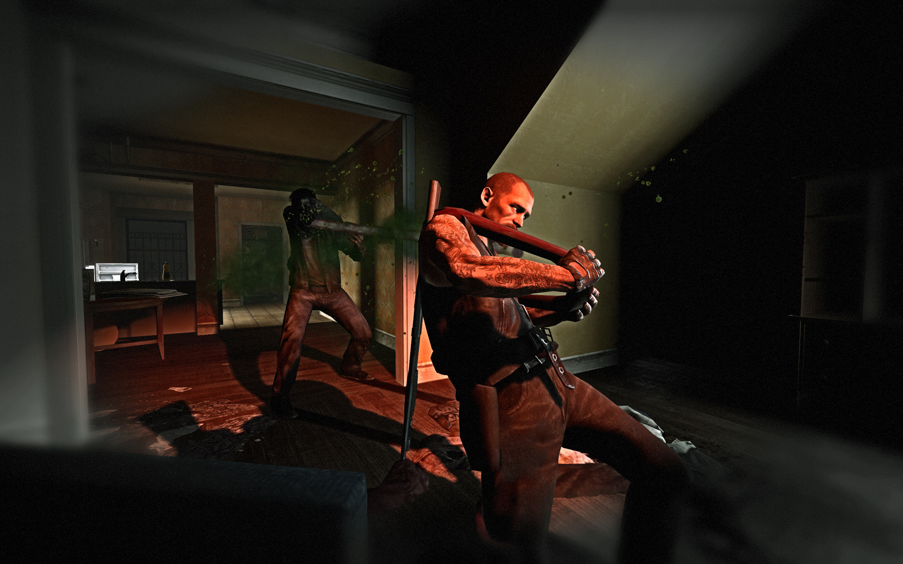
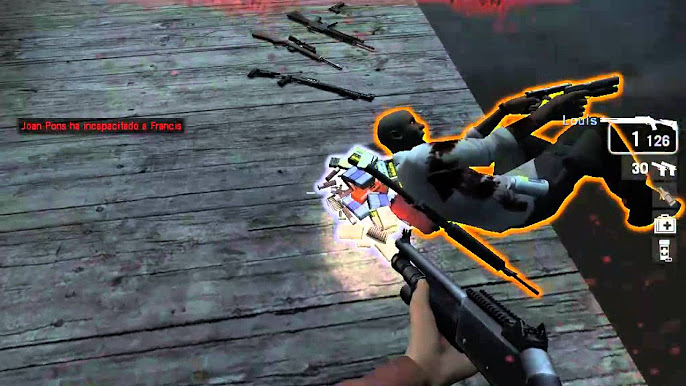

Mecánicas del primer juego
El juego se centra en la cooperación entre 4 jugadores humanos (o bots), que deben trabajar en equipo para sobrevivir a oleadas de zombis mientras avanzan por mapas con múltiples etapas.
Una de las mecánicas más innovadoras es: el "Director de IA" controla la aparición de enemigos, ítems y eventos para adaptar la dificultad según el rendimiento del equipo,dando haci una experiencia unica en cada partida, gracias al "Director de IA" Cada partida es distinta.
Además de zombis normales, hay enemigos únicos con habilidades especiales como el Hunter (salto), Smoker (lengua atrapadora), Boomer (explota) y Tank (fuerza bruta).
Los jugadores pueden encontrar escopetas, rifles de asalto, pistolas, cócteles molotov, botiquines y pastillas para recuperar salud. Saber usarlos estratégicamente es clave para sobrevivir.
Cuando un jugador pierde toda su salud, es incapacitado pero aun no muere es una forma de poder ir a levantarlo y volver a luchar, y solo puede usar su pistola. Debe ser ayudado por un compañero antes de morir por completo.
Cada campaña culmina en un evento final donde los jugadores deben resistir hasta la llegada de un vehículo de rescate. Estos momentos requieren estrategia, recursos y buena coordinación.